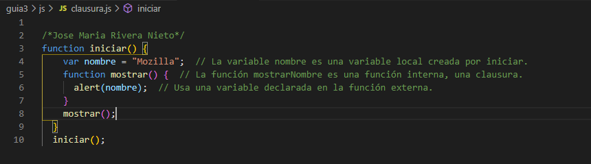

Una clausura o closure es una función que guarda referencias del estado adyacente (ámbito léxico). Una clausura permite acceder al ámbito de una función exterior desde una función interior. En JavaScript, las clausuras se crean cada vez que una función es creada, en otras palabras es la capacidad de una función de mantener su ámbito de variables después de haber sido retornada por otra función.
La existencia de closures aporta ventajas a la programación con JavaScript, ya que podemos usarlos para resolver necesidades que nos surjan. Pero también genera problemas: a veces se generan closures sin querer con efectos indeseados. O a veces se crea un excesivo número de closures innecesariamente, consumiendo recursos y haciendo más lenta la ejecución del código.